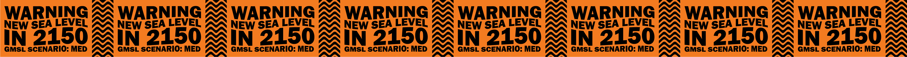
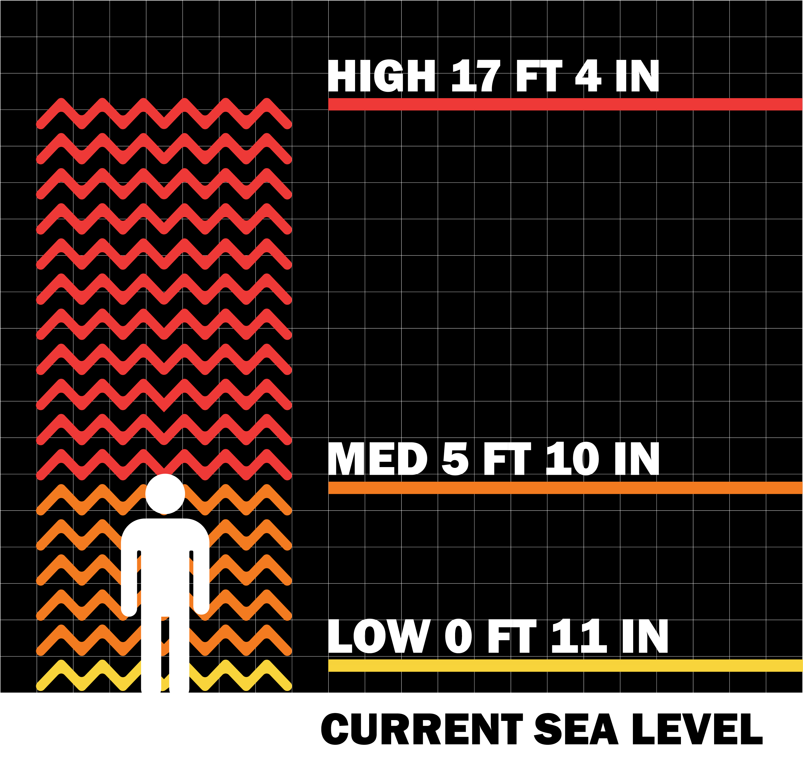
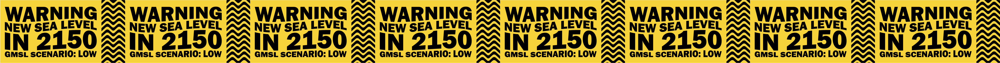

NEW SEA LEVEL
NEW SEA LEVEL is a project that aims to visualize the potential new water lines in San Francisco in 2150 due to the effect of climate change. As a proponent of design as a tool to spark social change, I want to make the invisible visible and spotlight just how devastating the rising sea level predictions are in regards to how our society operates. With research gathered from the National Oceanic and Atmospheric Administration, I have designed 3 different caution tapes in accordance with 3 varying severity scenarios and juxtaposed against the city itself. The tapes simultaneously showcase not only how high the threat climate change poses in an intuitional and immediate kind of way, but also highlight what is potentially at risk in the process. Buildings, landmarks, history, people, livehoods, our way of life itself; all are at stake here, all are at risk. Even SOMArts, the place where this exhibition takes place, is in the danger zone.
Data Breakdown

Picture Gallery